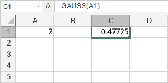

GAUSS funkcija
Funkcija GAUSS je jedna od statističkih funkcija. Koristi se za izračunavanje verovatnoće da član standardne normalne populacije padne između srednje vrednosti i z standardnih devijacija od srednje vrednosti.
Sintaksa
GAUSS(z)
Funkcija GAUSS ima sledeći argument:
| Argument | Opis |
|---|---|
| z | Numerička vrednost. |
Napomene
Kako primeniti funkciju GAUSS.
Primeri
Slika ispod prikazuje rezultat koji vraća funkcija GAUSS.
